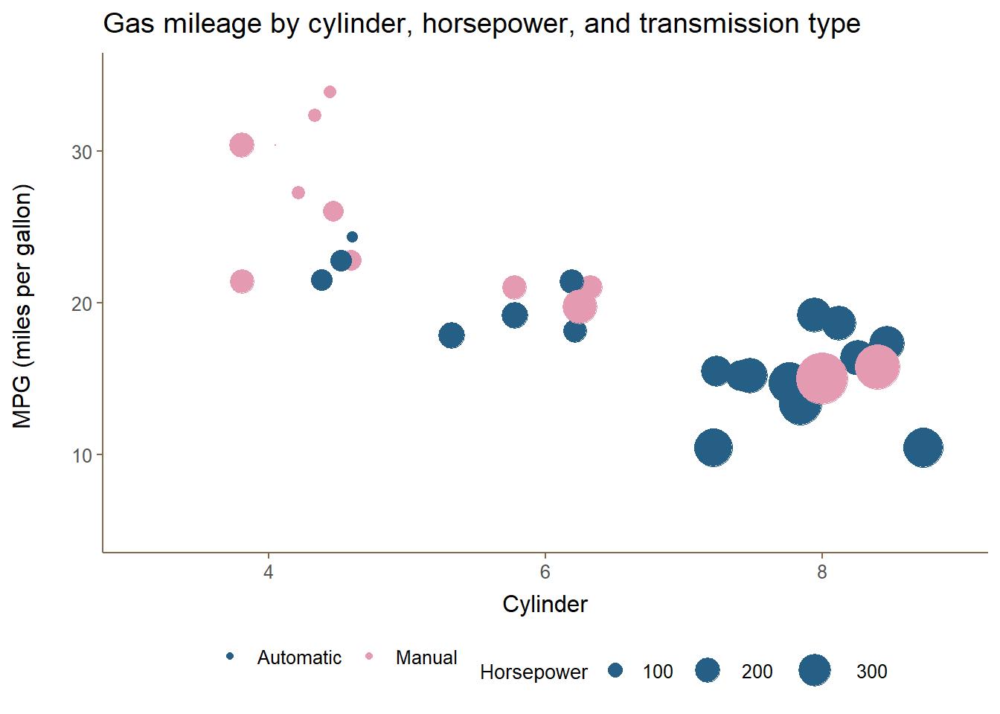
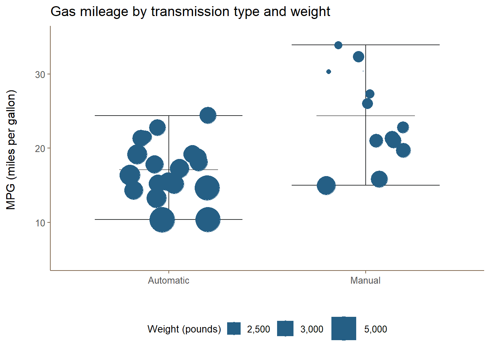
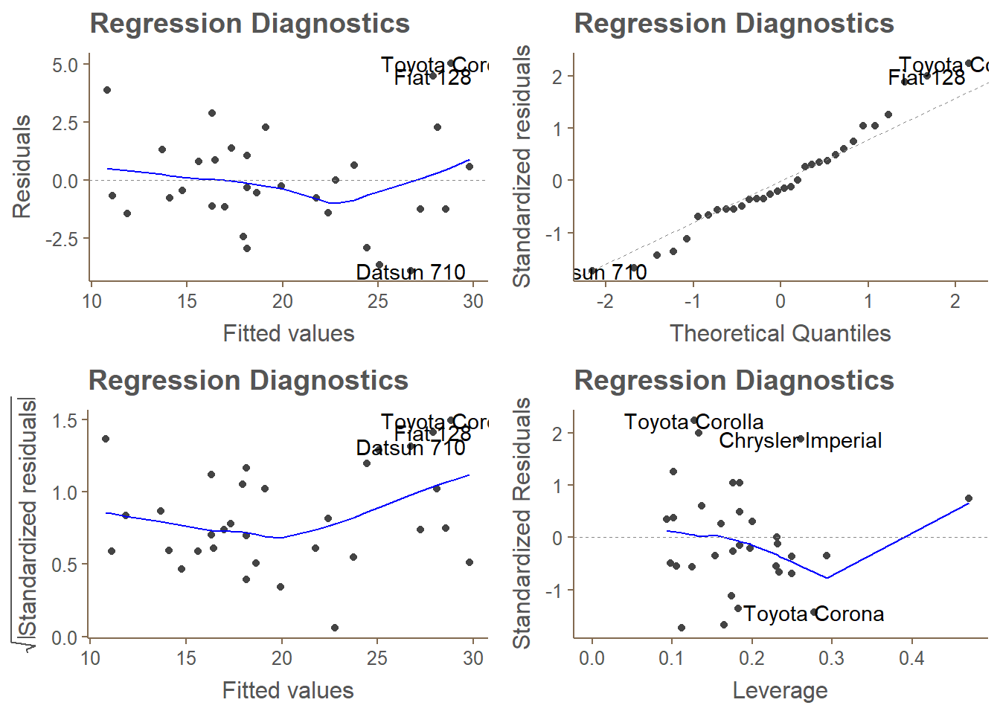

Looking at a data set of a collection of cars, explore the relationship between a set of variables and miles per gallon (MPG) (outcome)
The results indicate that, although, there is partial evidence supporting the hypothesis that manual transmission provides better fuel efficiency, this is not borne out by the data. The results from stepwise regression indicate that although there is a positive association with fuel efficiency and manual transmission the result is not statistically significant. There are a number of confounding factors that may be the reason for this, among the most important are the weight of the car and horsepower. On this point, the fact that the majority of those cars with manual transmission tended, on average, to be smaller both in terms of weight and engine size is a major confounding element. In the dataset, manual transmission cars were more likely to be smaller, confounding the effect of transmission type. Accounting for cylinder number, weight, and horsepower mitigates the affect of transmission type. Preliminary results from a simple linear regression model with transmission type as the sole explanatory variable suggests that manual transmission improves fuel efficiency by 7.2 miles per gallon. Upon further inspection, a model selected by stepwise regression suggests that this improvement is only 1.8 miles; and this is not statistically significant at standard levels of confidence.
A limitation of these results are the small sample size and the lack of consideration of interaction variables. Any further study to quantify the effect of transmission type on fuel efficiency would require a much larger and more representative sample.
Since we are exploring the impact of transmission type on gas mileage (MPG), we can start our analysis by plotting the gas mileage of each car against its cylinder number (V4, V6, V8). But rather than just a simple scatter plot with MPG plotted against cylinder number, we can also visualize a few other key factors affecting MPG. In this case, let’s color the observations by transmission type and allocate the size of points by horsepower (we could also use engine displacement rather than horsepower).

From first glance there is a noticeable negative linear association with MPG and the number of cylinders a car possesses. By the same token, there is a strong correlation with horsepower and cylinder number, which implies that with more horsepower, there is an associated decline in fuel efficiency. Inspecting this plot, however, it is rather difficult to gauge whether manual transmission cars have better fuel efficiency. Noticeably, there are a large number of number of manual transmission cars with four cylinders than those with an automatic transmission. We can confirm our visual inspection by presenting the summary statistics of the cars grouped by cylinder number and transmission type.
| Summary statistics | |||||
|---|---|---|---|---|---|
| Transmission | MPG | Displacement | Horsepower | Weight | 1/4 mile time |
| 4-cylinder | |||||
| Automatic | 22.90 | 135.87 | 84.67 | 2935.00 | 20.97 |
| Manual | 28.08 | 93.61 | 81.88 | 2042.25 | 18.45 |
| 6-cylinder | |||||
| Automatic | 19.12 | 204.55 | 115.25 | 3388.75 | 19.22 |
| Manual | 20.57 | 155.00 | 131.67 | 2755.00 | 16.33 |
| 8-cylinder | |||||
| Automatic | 15.05 | 357.62 | 194.17 | 4104.08 | 17.14 |
| Manual | 15.40 | 326.00 | 299.50 | 3370.00 | 14.55 |
A boxplot better reveals the difference in fuel efficiency between the two transmission types. Plotting these groups and allocating the size of the points by the weight of the cars (measured in pounds) reveals another, and perhaps, obvious pattern: heavier cars tend to have worse fuel efficiency. The boxplot, however, also reveals that manual transmission cars tend to have higher fuel efficiency than those with automatic transmission. This relationship, however, is potentially confounded by other factors, namely, the weight of the car and horsepower.

| Summary statistics | |||||
|---|---|---|---|---|---|
| Transmission | MPG | Displacement | Horsepower | Weight | 1/4 mile time |
| Automatic | 17.15 | 290.38 | 160.26 | 3768.89 | 18.18 |
| Manual | 24.39 | 143.53 | 126.85 | 2411.00 | 17.36 |
##
## Welch Two Sample t-test
##
## data: mtcars$mpg by mtcars$am
## t = -3.7671, df = 18.332, p-value = 0.001374
## alternative hypothesis: true difference in means is not equal to 0
## 95 percent confidence interval:
## -11.280194 -3.209684
## sample estimates:
## mean in group 0 mean in group 1
## 17.14737 24.39231| Fuel Efficiency (MPG) | |
| Manual Transmission | 7.245*** |
| (1.764) | |
| Constant | 17.147*** |
| (1.125) | |
| Corrected AIC | 197.3 |
| R2 | 0.360 |
| F Statistic | 16.860*** (df = 1; 30) |
| Notes: | ***Significant at the 1 percent level. |
| **Significant at the 5 percent level. | |
| *Significant at the 10 percent level. | |
| Fuel Efficiency (MPG) | |
| Six cylinder | -2.649 |
| (3.041) | |
| Eight cylinder | -0.336 |
| (7.160) | |
| Displacement | 0.036 |
| (0.032) | |
| Horsepower | -0.071* |
| (0.039) | |
| Rear axle ratio | 1.183 |
| (2.483) | |
| Weight | -4.530* |
| (2.539) | |
| Quarter-mile time | 0.368 |
| (0.935) | |
| Straight engine | 1.931 |
| (2.871) | |
| Manual Transmission | 1.212 |
| (3.214) | |
| Four gears | 1.114 |
| (3.800) | |
| Five gears | 2.528 |
| (3.736) | |
| 2-barrel carburetor | -0.979 |
| (2.318) | |
| 3-barrel carburetor | 3.000 |
| (4.294) | |
| 4-barrel carburetor | 1.091 |
| (4.450) | |
| 6-barrel carburetor | 4.478 |
| (6.384) | |
| 8-barrel carburetor | 7.250 |
| (8.361) | |
| Constant | 23.879 |
| (20.066) | |
| Corrected AIC | 197.3 |
| R2 | 0.893 |
| F Statistic | 7.830*** (df = 16; 15) |
| Notes: | ***Significant at the 1 percent level. |
| **Significant at the 5 percent level. | |
| *Significant at the 10 percent level. | |
Switching to stepwise regression to determine the best model.
| Fuel Efficiency (MPG) | |
| Six cylinder | -3.031** |
| (1.407) | |
| Eight cylinder | -2.164 |
| (2.284) | |
| Horsepower | -0.032** |
| (0.014) | |
| Weight | -2.497*** |
| (0.886) | |
| Manual Transmission | 1.809 |
| (1.396) | |
| Constant | 33.708*** |
| (2.605) | |
| Corrected AIC | 197.3 |
| R2 | 0.866 |
| F Statistic | 33.571*** (df = 5; 26) |
| Notes: | ***Significant at the 1 percent level. |
| **Significant at the 5 percent level. | |
| *Significant at the 10 percent level. | |
## Analysis of Variance Table
##
## Model 1: mpg ~ am
## Model 2: mpg ~ cyl + hp + wt + am
## Res.Df RSS Df Sum of Sq F Pr(>F)
## 1 30 720.90
## 2 26 151.03 4 569.87 24.527 1.688e-08 ***
## ---
## Signif. codes: 0 '***' 0.001 '**' 0.01 '*' 0.05 '.' 0.1 ' ' 1